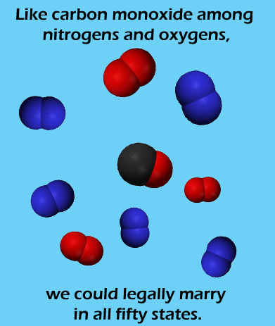

Comic JK 327
When I Feel Like It
⇤
<
?
>
⇥

⇤
<
?
>
⇥
Forum
.
RSS
.
Digg
.
Facebook
.
Reddit
.
Twitter
.
Stumbleupon
. . . . Wow, this is seriously racist! Enter your thoughts on number 327 here. Please, no spamming, trolling, or phreaking. ...asphyxiation? >By straight people I guess Comparing diatomic gases to gay marriage That's all very well, but I'm in a water relationship. > which one are you? >>Oxygen =D This is so fucking racist. >Um... what? i thought it was a joke about gay marriage... race has nothing to do with it. >>Well, its the truth god dammit. I don't want no lazy good for nothing carbons and oxygens marrying any honorable nitrogens. >>>Nitrogen is a second-class atom, so no worries there. Nitrogen and Oxygen are plural without the S. >That's because they're usually referred to as gases, which are uncountable. When referring to molecules, though, it's pluralized normally. I like my sex like an oxygen atom likes water, if you know what I mean. > you like to attack it to form a powerful peroxide? >>God I love this forum. >It's hard to sneak away the morning after when you're covalently bonded, though. Plus, you get stuck with the negatives most of the time. >But at least it's better than ionic bonding, which ends with you getting charged.